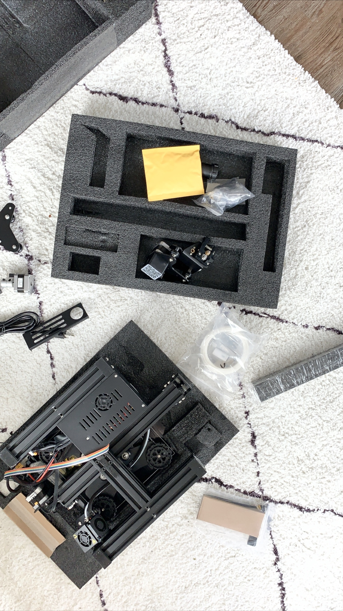
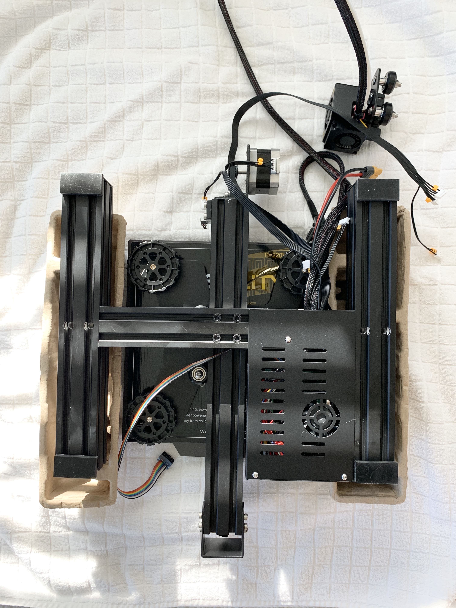
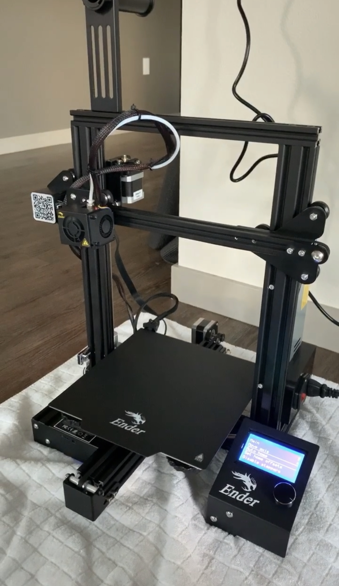

This is my first time building and using a 3D printer, so the initial set up took me quite some time (about 3 hours) - I didn't want to rush through the process so took my time with the build.
I found a great guide video online that helped walk me through each of the steps of the process.
 To level the bed of the printer, I followed another really helpful video by the same account.
Overall, it was a relatively straightforward process for me that just took some time to get right - definitely had to redo some parts to adjust the leveling and tightness of the bolts!
